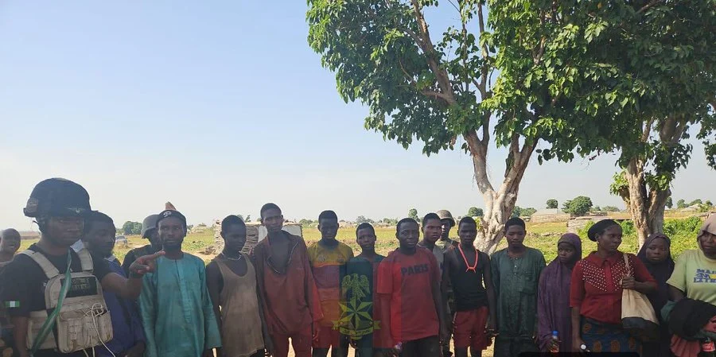

Security & Crime · 06 Nov 2026
Army rescues 16 kidnap victims, recovers weapons in Niger

Troops of the Nigerian Army have rescued 16 kidnapped victims and recovered two AK-47 rifles, three rocket-propelled grenade bombs, 33 motorcycles, ammunition and over ₦4.7m during operations against terrorists and kidnappers in Niger State. Read More: https://punchng.com/army-rescues-16-kidnap-vict
Multiple independent publishers are reporting on the same development: Army rescues 16 kidnap victims, recovers weapons in Niger.
The available reports place the development in the Security & Crime category. The accounts were compared for agreement on the central event rather than simply shared names or broad topics.
One of the available reports describes the development this way: Troops of the Nigerian Army have rescued 16 kidnapped victims and recovered two AK-47 rifles, three rocket-propelled grenade bombs, 33 motorcycles, ammunition and over ₦4.7m during operations against terrorists and kidnappers in Niger State. Read More: https://punchng.com/army-rescues-16-kidnap-victims-recovers-weapons-in-niger/
Readers should consult the linked source reports for additional context, updates and details that may change as the story develops.
Sources
This article was produced by the C. O. Eric AI Newsroom from the cited sources. It is published only after automated evidence and safety checks.